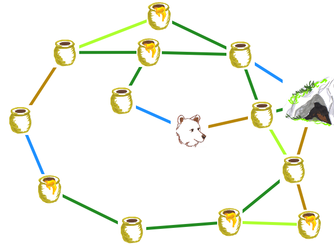

### Data2day Talk ## In Folien nur Konzept zeigen, allen Code in Notebook Orso und PPO erklären Alles von Policy to Observation muss weg immer wieder dahin zurück kehren und zeigen wo man ist Dann weiter mit Practiioners View
### Notebooks https://colab.research.google.com/github/christianhidber/easyagents/blob/master/jupyter_notebooks/workshop/orso.ipynb http://bit.ly/easyagents-orso https://colab.research.google.com/github/christianhidber/easyagents/blob/master/jupyter_notebooks/workshop/easyagents_line_exercise.ipynb http://bit.ly/easyagents-lineworld
### Environment vs Observation Snapshot of one Levle: Observation https://www.mariowiki.com/images/7/78/SMAS_LL_World_4-1_Screenshot.png All Levels: Environment https://i.ytimg.com/vi/de4Wd56fqTM/maxresdefault.jpg
## Pragmatic Reinforcement Learning with Easyagent https://djcordhose.github.io/ml-workshop/2019-rl-easyagents.html
### Find the optimal route  <small> https://opendatascience.com/bears-need-to-learn-as-well-practical-reinforcement-learning-with-tensorflow-2-0-tf-agents/ </small>
### Reinforcement Learning: Using an Agent <img src='img/rl/rl-train-play-1.png' height="550">
### Reinforcement Learning: Training an agent <img src='img/rl/rl-train-play-2.png' height="550">
### Reinforcement Learning Using Easyagents _Main Challenge is defining your environment / simulation_ <small> https://github.com/christianhidber/easyagents </small>
### Solution <video controls src="img/rl/orso-sample-path.mp4" muted type="video/mp4" height="500"></video>
### Easyagents <!-- <img src='img/rl/orso_raw.png' style="float: left;" height="300px"> --> <!-- <div style="float: right; width: 600px; font-size: xx-large"> --> <div> * Abstraction over complex solutions * Allows you to concentrate on defining your problem * No need to go through the details of algorithms (we did this for you) * Supports TF-Agents and OpenAI (more to come) * Reinforce (Vanilla Policy Gradient), PPO, and DQN work out of the box </div> <small style="clear: both"> https://github.com/christianhidber/easyagents </small>